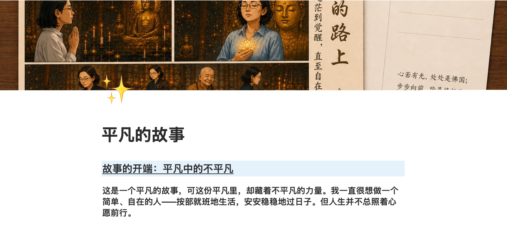
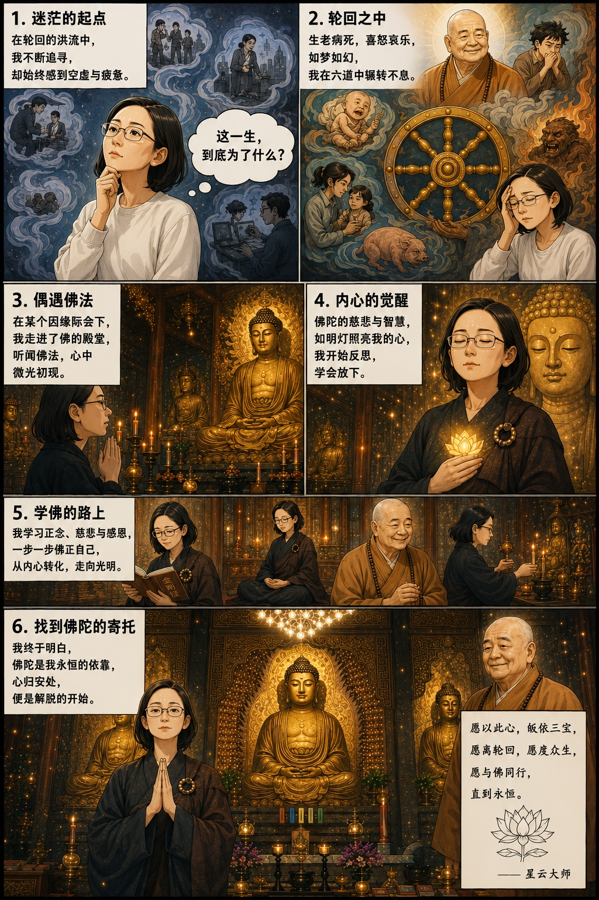
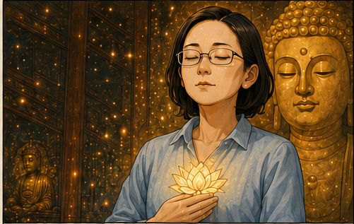

每一段路途，都有属于自己的光芒与故事。 Every journey brings its own light and stories.

记录生活中的温暖时刻，留存最真实的美好。 Capturing warm moments of life and keeping true beauty.

岁月的沉淀，是时光给生活最好的礼物。 The accumulation of years is the best gift time gives to life.